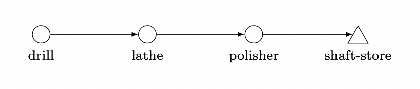
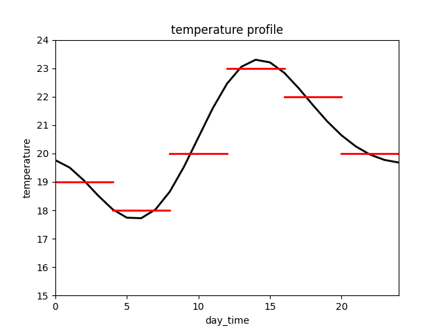

Example 02: Shaft
The focus of this example is the modeling of global and process functions. First, the process displayed is briefly outlined. Then, the individual functions are described in detail. Finally, the simulation output is used to validate the considerations.
Process description
Because the focus is on the functions, a simple process is deliberately used here. The process is a linear machining line, which operates on a cycle time of one minute. Since the drilling process takes 2 minutes, the station uses two machines to fulfill the cycle time. During this process, shafts are first drilled, turned, and then polished. The purpose of the simulation study is to determine the course of the surface quality over time. Shafts are not rejected during the process.
{kind=link}
In addition, it is assumed that the process occurs in a factory with a temperature variation throughout the day, which influences the polishing process.
Process function: drilling
First, the shafts are drilled. Each machine has a probability (0.15% in this example) that the drill will break (drill_breakage). If this occurs, then the surface (surface) roughness will increase by an average of two units. In addition, the machine used for the machining process is blocked for the duration of the machining (2 minutes) by yielding a timeout event.
def drilling(env, item, machine, factory):
# If the drill breaks the surface roughness increases
if random.random() < machine.drill_breakage:
item.surface += random.normalvariate(2, 0.1)
# Blocking the drilling machine for machining time
yield env.timeout(2)
Process function: turning
The lathe has wear that increases with each machining operation. Since the wear affects the surface quality, the lathe must be maintained whenever the wear reaches a certain level (1 in this example). This maintenance reduces the wear completely but blocks the machine for 10 minutes. The correlation (fictitious and for illustrative purposes only) between surface quality and machine wear is as follows:
The wear of the machine increases by 0.006 units on average for each machining operation, so an average of 167 machining operations are possible between two rounds of maintenance.
def turning(env, item, machine, factory):
# If the wear exceeds a certain limit, the machine is maintained
if machine.wear >= 1:
machine.wear = 0
yield env.timeout(5)
# The roughness achievable during machining depends on the wear of the machine
item.surface += machine.wear**2 * 1.5
# With each machining operation, the wear of the machine increases
machine.wear += abs(normalvariate(0.006,0.00018))
# Blocking the lathe for machining time
yield env.timeout(1)
Process function: polishing
The polishing process can reduce roughness. If the temperature in the factory increases, then the polishing machine’s potential to reduce the surface roughness decreases. The relationship between roughness and temperature is as follows:
def polishing(env, item, machine, factory):
# The roughness will decrease the lower the temperature is.
item.surface -= 8 - factory.temperature * 0.3
yield env.timeout(1)
Global function: temperature
In the global function temperature_func, the profile of the temperature is described. In the simulated time (3 days), it is assumed that the temperature profile (black) in the following figure is given every day. The global temperature should correspond to the approximated course (red).
{kind=link}
The temperature values are stored in a dictionary (in the global scope) and assigned to the temperature in temperature_func. The simulated time is checked for equality in the function, which is only allowed here because the time intervals in the timeout event are not random (otherwise a KeyError would occur).
This temperature profile is only intended to demonstrate the functionality. Of course, it is possible to define much finer profiles when corresponding data sets are available or to add certain variations to the values.
temp_dict = {0: 19, 240: 18, 480: 20, 720: 23, 960: 22, 1200: 20}
def temperature_func(env, factory):
# Determinate the current daytime
day_time = env.now % 1440
# Set the new Temperature
factory.temperature = temp_dict[day_time]
# Wait exactly 4 hours
yield env.timeout(240)
Start simulation
This code shows how the simulation is started. The simulation time is 4320 since this is exactly 3 days in the unit of minutes. Since only the surface quality is of interest for the analysis, only the shafts are tracked. In addition, the column item_id is removed during the export of the data (For demonstration purposes only).
from prodsim import Environment
if __name__ == '__main__':
# Create simulation environment
env = Environemnt()
# Read in the process files
env.real_files('./data/process.json', './data/function.py')
# Start the simulation
env.simulate(sim_time=4320, track_components=['shaft'], progress_bar=True)
# Export the simulation data
env.data_to_csv(path_to_wd='./output/', remove_column=['item_id'], keep_original=False)
Simulation output
The diagram below depicts the surface roughness that the shafts exhibit over the simulated time after processing at each station.
The following aspects can be identified:
The six outliers visible in the three plots are caused by broken drills;
The zigzag shape that starts at the turning process step is caused by wear, which increases until maintenance before abruptly decreasing;
The effect of temperature appears in the wave-like course (green). There are three cycles since exactly 3 days were simulated.

The interruptions in production due to maintenance work at the lathe cannot be recognized. The reason for this is the line thickness of the plots. The raw output data reveals the points in time at which the process is not active. This time difference does not correspond exactly to the 10 minutes since the buffer stores are first filled before the process succumbs.